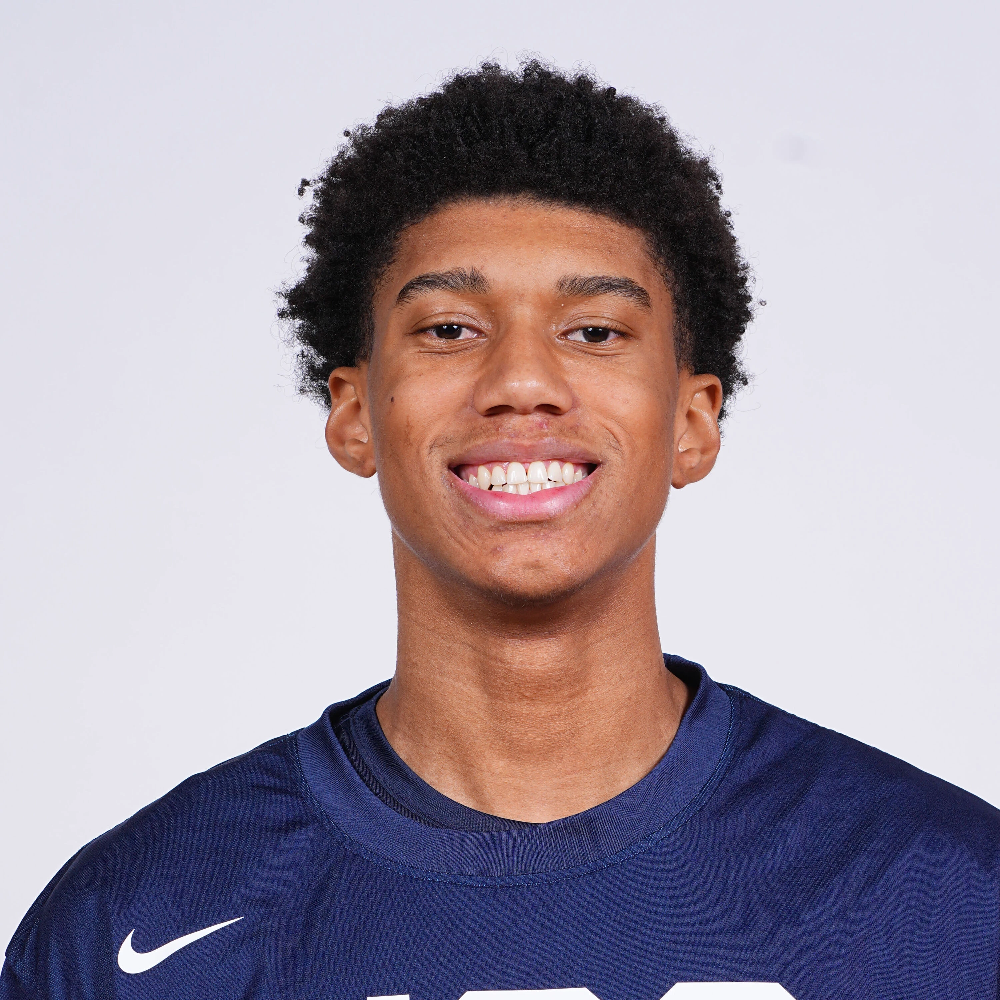

2027 NBA Draft · Preseason Report · Jul 5, 2026
Bruce Branch III
Preseason scouting notes ahead of BYU's 2026-27 season.

Draft Projection
NBA Role Projection
Stats
No college minutes logged yet — this section fills in once the season tips off.
Info
School: BYU | Class: FR | Position: SG/SF | Height: 6'7" | Weight: 190 | Wingspan: 7'1"
Physical
He has a lean 6'7" frame with good length and above-average vertical athleticism. While he moves well, his straight-line burst is less impressive. Adding strength will be a major priority as he develops, especially to handle more physical competition.
Offense
He has clean shooting mechanics, even though the three-point results have yet to fully catch up. He projects as a capable connective passer who keeps the offense moving and makes smart decisions with the ball. Around the rim, he is an excellent finisher thanks to his touch, timing, and athleticism.
The biggest question is his self-creation. He currently relies on others to generate advantages and does not consistently create his own shot or get to the rim off the dribble. Expanding that part of his game will determine how much offensive upside he has.
Defense
He offers intriguing defensive upside as a weak-side rim protector and versatile wing defender. He has a good nose for the ball, competes on the glass, and uses his length well to disrupt plays. With added strength, he could become a valuable multi-positional defender.
Outlook
At this stage, he projects as an ideal play-finishing wing who excels within his role. He has the tools to become a quality 3-and-D player who can attack closeouts, finish efficiently, and make the right extra pass. If his shooting and self-creation continue to improve, his offensive ceiling could rise another level.